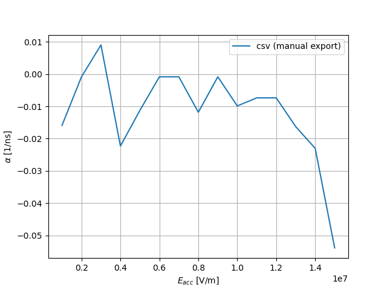
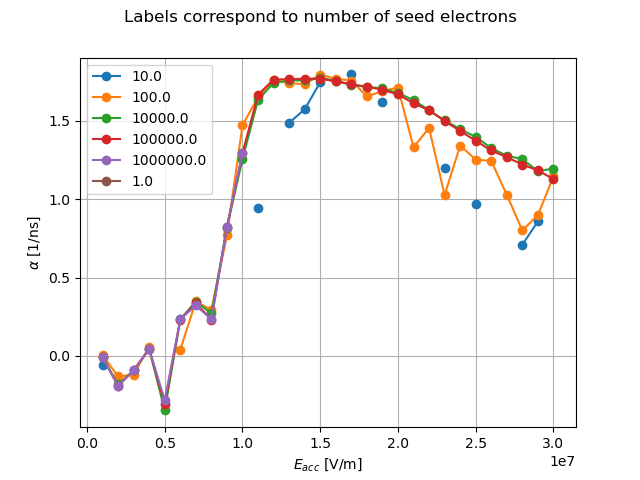
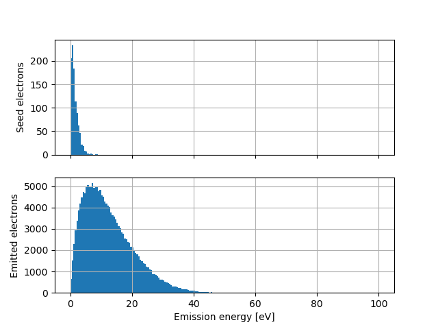
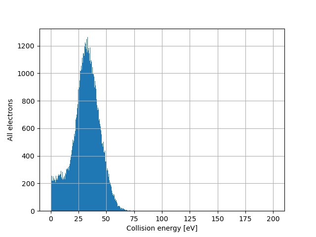
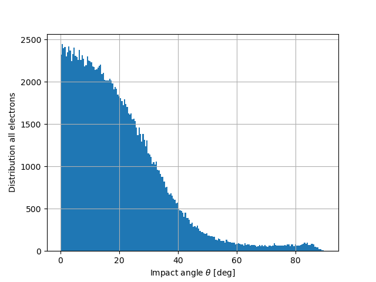
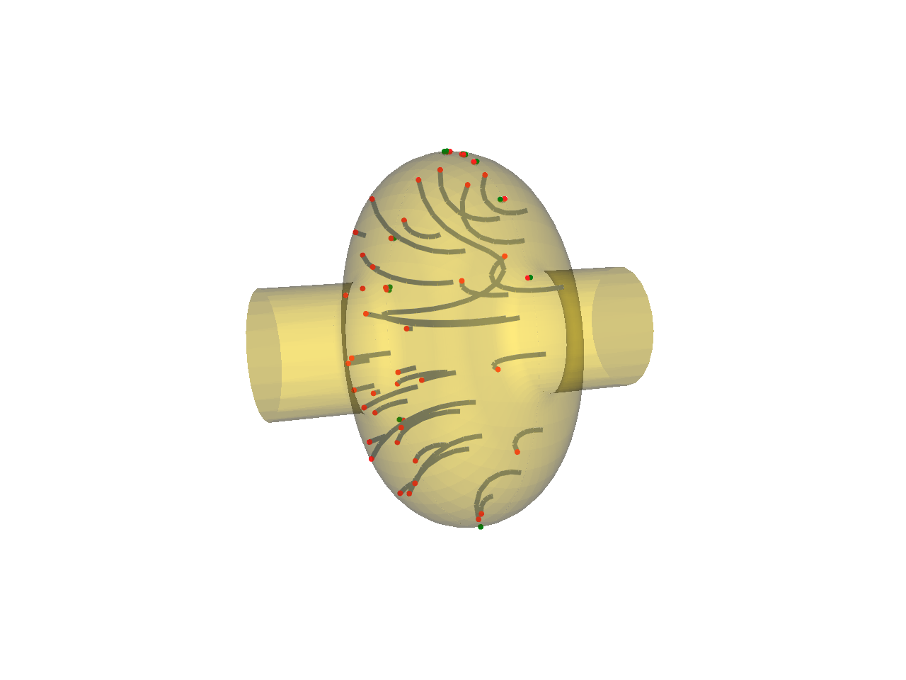
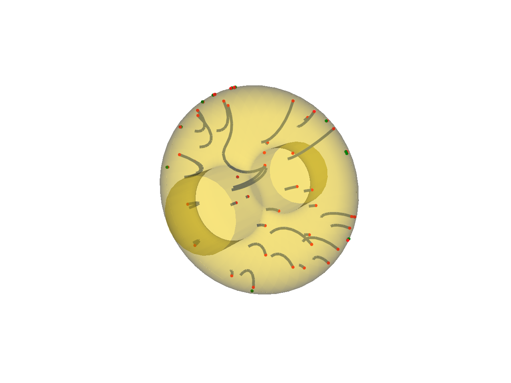

Introduction
This library is a set of tool to treat results from CST and SPARK3D. All illustrations shown below are produced with the scripts from the Jupyter notebook examples.
Compute exponential growth factors
From SPARK3D

From CST

Note
Easy study of the influence of other parameters, such as number of seed electrons in this example.
Treat CST’s position monitor data
Compute distribution of emission energy

Compute distribution of collision energy

Compute distribution of the impact angles

Note
In contrary to the collision angle histogram, the collision and emission energy histograms are natively available in CST.
Plot trajectories

